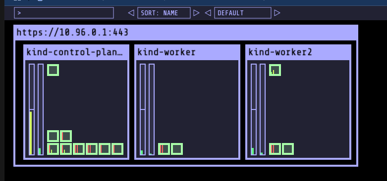

Lab 801 - Setting up Kubernetes Cluster with KIND
This lab describes the process of how you could quickly create a multi node Kubernetes Envonment using KIND, which is a simple and quick way to set up a learning environment. Advantage it offers over minikube or docker desktop based kubernetes setup is its a multi node environment closer to the real world setup.
Install Docker
Download and install Docker on a the Ubuntu machine as ,
curl -sSL "https://gist.githubusercontent.com/initcron/cadf5c920e5e7d1cb45803c36b656947/raw/006c02f7714315222f8055381ebb8c5f910c36a5/user-data-docker.sh" | sudo bash
validate
docker version
Install KIND and Kubectl
Install KIND on the Ubuntu machine as ,
# For AMD64 / x86_64
[ $(uname -m) = x86_64 ] && curl -Lo ./kind https://kind.sigs.k8s.io/dl/v0.27.0/kind-linux-amd64
# For ARM64
[ $(uname -m) = aarch64 ] && curl -Lo ./kind https://kind.sigs.k8s.io/dl/v0.27.0/kind-linux-arm64
chmod +x ./kind
sudo mv ./kind /usr/local/bin/kind
validate
kind
kind version
Install kubectl in the same environment as ,
curl -LO "https://dl.k8s.io/release/$(curl -L -s https://dl.k8s.io/release/stable.txt)/bin/linux/amd64/kubectl"
sudo install -o root -g root -m 0755 kubectl /usr/local/bin/kubectl
validate
kubectl
kubectl version --client
Setup Kubernetes Cluster with KIND
Download Cluster Configurations and Create a 3 Node Kubernetes Cluster as
git clone https://github.com/initcron/k8s-code.git
cd k8s-code/helper/kind/
kind create cluster --config kind-three-node-cluster.yaml
Setup context
kubectl cluster-info --context kind-kind
Validate
kubectl get nodes
[sample output]
root@demo:~# kubectl get nodes
NAME STATUS ROLES AGE VERSION
kind-control-plane Ready control-plane 89s v1.32.2
kind-worker Ready <none> 78s v1.32.2
kind-worker2 Ready <none> 78s v1.32.2
Wait till you see all nodes in Ready state and you have a cluster operational.
Wait for a couple of minutes and then validate if the pods are up and running.
kubectl get pods -A
[sample output]
NAMESPACE NAME READY STATUS RESTARTS AGE
kube-system coredns-668d6bf9bc-cp95t 1/1 Running 0 90s
kube-system coredns-668d6bf9bc-r2zgr 1/1 Running 0 90s
kube-system etcd-kind-control-plane 1/1 Running 0 97s
kube-system kindnet-6mpsn 1/1 Running 0 86s
kube-system kindnet-d2jmm 1/1 Running 0 87s
kube-system kindnet-pz78j 1/1 Running 0 90s
kube-system kube-apiserver-kind-control-plane 1/1 Running 0 95s
kube-system kube-controller-manager-kind-control-plane 1/1 Running 0 95s
kube-system kube-proxy-7djmx 1/1 Running 0 86s
kube-system kube-proxy-chgm2 1/1 Running 0 90s
kube-system kube-proxy-x5rxr 1/1 Running 0 87s
kube-system kube-scheduler-kind-control-plane 1/1 Running 0 95s
local-path-storage local-path-provisioner-7dc846544d-dvrdh 1/1 Running 0 90s
Setup Visualiser
cd ~
git clone https://github.com/schoolofdevops/kube-ops-view
kubectl apply -f kube-ops-view/deploy/
To check whether visualiser has come up, use the following commands,
kubectl get pods,services
[Expected output ]
[root@bbb-01 ~]# kubectl get pods,services
NAME READY STATUS RESTARTS AGE
pod/kube-ops-view-65466fb5c9-7gwnm 1/1 Running 0 61s
NAME TYPE CLUSTER-IP EXTERNAL-IP PORT(S) AGE
service/kube-ops-view NodePort 10.96.54.166 <none> 80:32000/TCP 61s
service/kubernetes ClusterIP 10.96.0.1 <none> 443/TCP 4m28s
Find out the public ip of your host using the following command,
curl ifconfig.me
To access the visualiser, visit http://IPADDRESS:32000 ( where replace IPADDRESS with the actual IP address of the host noted above).
You shall see a visualiser similar to the following loaded on the browser.

You could scale it up by adding scale parameter as http://IPADDRESS:32000/#scale=2.0 to the URL.
If you see this page , Congratulations !! You have the cluster setup.
You are done and can STOP here while doing the first time setup.
Restarting and Resetting the Cluster (Skip for now)
Note: This is a Optional Topic. Skil this during your initial setup lab.
To stop and start the cluster, you could stop and containers created with docker and then start them back
docker ps
docker stop kind-control-plane kind-worker kind-worker2
to bring it back again,
docker start kind-control-plane kind-worker kind-worker2
Even if you restart your system and bring it up using the above command, it should work.
To reset the cluster (note you will be deleting the existing environment and create fresh one)
asusming your cluster name is k8slab reset it as :
kind get clusters
kind delete cluster --name k8slab
rm -rf ~/.kube
kind create cluster --name k8slab --config kind-three-node-cluster.yaml